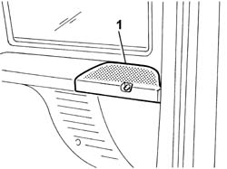
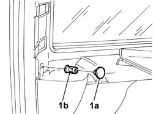
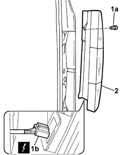

5540A44 l/h or r/h tail light (one) - r+r
- Path
- Procedures > 55 ELECTRICAL EQUIPMENT > 5540 EXTERIOR LIGHTING > 5540A lighting > 5540A44 l/h or r/h tail light (one) - r+r
- Kind
- repair procedure (removal / refitting; the operation number is the code)
- Applies to
- all engines; all production periods
- Interactive page
- https://sloeber94.github.io/elrnDB-fDbl/en/#/2584933
Applies to: all engines; all production periods
 Removing
Removing
 Refitting
RefittingDisconnect the battery negative terminal.
Applies to: all engines; all production periods; only with equipment: Doblò trim level
1. Remove the loudspeaker protection.

Applies to: all engines; all production periods; only with equipment: Doblò trim level
1. Remove the rubber (1a) and undo the nut (1b).

Applies to: all engines; all production periods; only with equipment: Doblò trim level
1. Undo the fixing bolts (1a) and disconnect the electrical connector (1b).
Name | Connector | |
|---|---|---|
1b | Rear left light cluster |
Name | Connector | |
|---|---|---|
1b | Rear right light cluster |
2. Remove the rear lights cluster.

Applies to: all engines; all production periods
Refitting
RemovingFit the rear lights cluster and connect the electrical connector.
 | Name | Connector |
|---|---|---|
- | Rear left light cluster |
| Name | Connector |
|---|---|---|
- | Rear right light cluster |
Tighten the retaining bolts to the body.
tighten the rear attachment and fit the protective rubber.
Applies to: all engines; all production periods; only with equipment: Doblò trim level
Fit the loudspeaker protection.
Connect the battery's negative terminal and check that the lights in the cluster are working properly.
Applies to: all engines; all production periods; only with equipment: Doblò trim level
Connect the battery's negative terminal and check that the lights in the cluster are working properly.
Topics linked from this page (2)
Topics that link to this page (9)
- I01 SIDE LIGHTS/NO. PLATE LIGHTS NOT WORKING
- I10 DIRECTION INDICATORS / HAZARD WARNING LIGHTS / NOT WORKING
- I15 (SIDE) BRAKE LIGHTS NOT WORKING
- I17 REVERSING LIGHTS NOT WORKING
- I21 REAR FOG LAMPS NOT WORKING
- 5505C41 cabin wiring - r r
- 5540A42 tail light panel one left or right r r
- 5540A50 tail-light bulb (one), lh or rh - replace
- 7020E14 rear door flap hinge - r+r